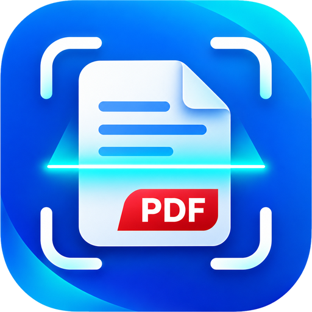

EscanerYa
Escanea documentos y cédulas con tu celular y conviértelos en PDF, JPG o PNG. Todo se procesa en tu teléfono, sin internet.
- Corrección de bordes y perspectiva, filtros y mejora de lectura.
- Varias páginas en un solo PDF, en el orden que quieras.
- Copia de cédula: anverso y reverso juntos, arriba de una hoja A4.
- Reduce el PDF a 500 KB, 1, 2 o 5 MB para tus trámites.
Muy pronto en Google Play